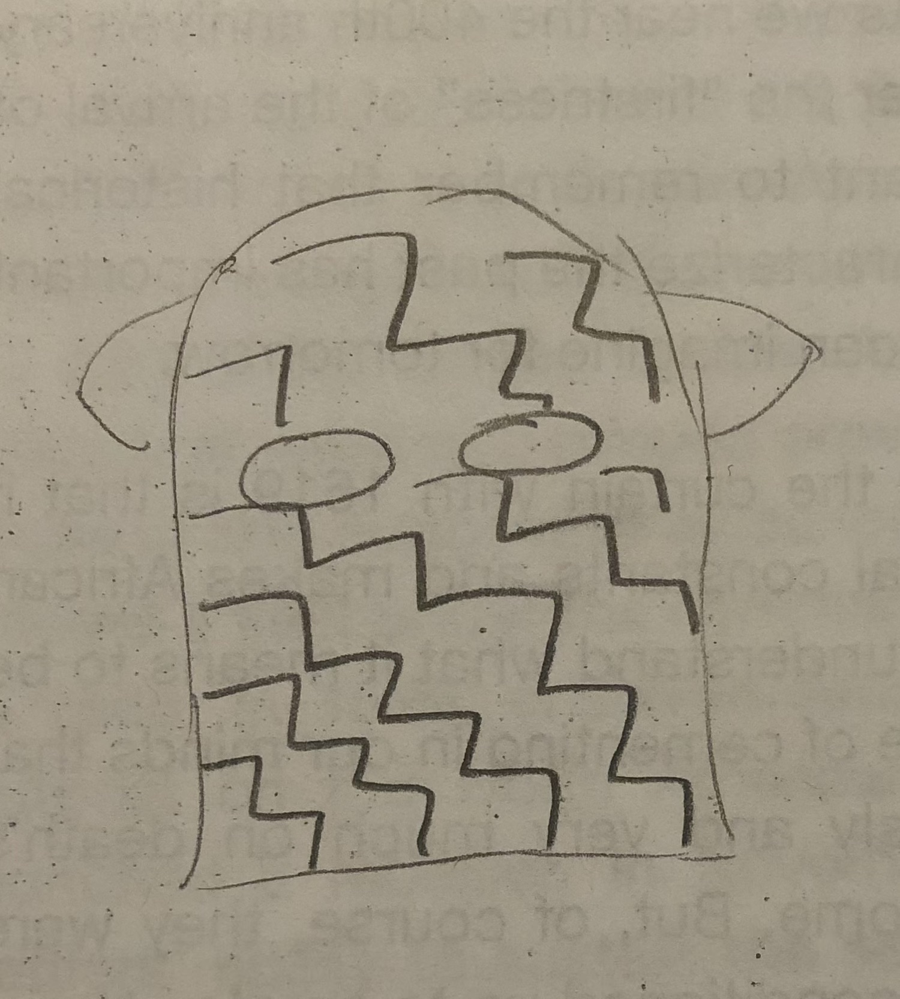
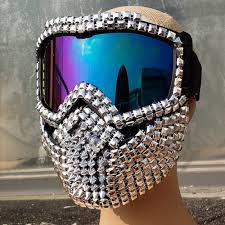
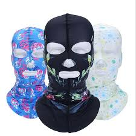

I'm feeling pretty good today because I went online and figures out how to make a menu bar for my website. I think it is turning out pretty well and I am very exicted to see how far I can go with it.
Today I was fasting for Yom kippur and somehow got bored of TV. I decided to start coding and I ended up coding for around 3 hours. I got really frustrated when trying to push my website, but I was super proud of being able to style my website! I added a journal (clearly) and I also cleaned up my menu bar.
Today I changed the fonts and pushed my website! ✓
Today I figured out how to add more toppings and make them change when you click on it. That doesnt really make sense, but i'm so happy it worked! Basically I had to make a new variable called image and when you cilck on the "menu bar" of toppings it changes the variable.😃
I finally was able to change the angles everytime a topping was added. I made a variable that is set to a random number from 1-360. Then the topping had a transform that rotated it that random number of degrees! It makes it look a lot more realistic.
today we were asked to make a code that prints the numbers 1-100 where the multiples of three printed "fizz", the multiples of 5 print "buzz" and the mulitples of 15 print "fizzbuzz." I did it in scratch and here is my code!

Today I made a function! Basically, it changes color everytime you click on a square. It is very basic but it will be a great starting point to make many more functions. I had some frustrations with getting it to work, but I used recources on google, like w3, and I was able to figure it out! click here to see it!
Today our homeowork was to read Javascript for cats. I learned so much while reading this short website. I learned that you can do basically anything from the console. I also leaned about how the replace function works and tried it out in the console! I also worked on my function project for a little longer and actually made the color switch from changing randomely to change based on where you click inside of the box.
Today I made an array that has a bunch of different emojis on it! It was really sool to figure out a new way of making and using functions.
I have been brainstorming a couple of ideas for a gift. Here are my top 5 ideas.

They are pretty messy but that is just a rough sketch. I'm pretty interested in the idea about the text messages becaue I think that could be really cute. I also like the trump countdown and dog motivator because those are a little funnier
Because of winter break i haven't coded in a while, but recently I made a code that randomly places 100 circles that are random colors. The random colors come from an array. And for the random placement I used the math random feature. There is also a clear button that when pressed, all of the cirlces dissapear. In the future I want to make the circles randomly move around every second and not have to refresh for them to move. here is the code!
Today in class Elizabeth helped me figure out hwo to make the dots move every second. We had some issues becasue it stopped working entirely. It took a lot of debugging but we finally figured out that we had placed the function inside of the event listener. It was super satisfying when we got it though! here is the code!
Today I started working on my valentine. I decided to incorperate what I did with the swarm project and make it cute. I was making it for my friend hannah who really likes sweethearts with the messages so i decided to make my own sweethearts moving around the page with my own messages. They each have cute inside jokes or sayings. When you click on the page, they all stop moving so you can read them. here is the code!
Today I started working on a quiz. I want to make a quiz that is similar to buzzfeed. I made a very simple wuiz but i want to make it look better and actually mean something instead of being pointless and random. here is the code!
It has been a little while since I have worked on computer science, but after break molly assigned an article to read. It was about how cameras can detect who we are even through masks. I thought a solution was to just put a white sheet over your head, but i thought that was too boring and unoriginal. And people would not want to do that because it is so boring. sooooo i made these masks that can have any type of pattern one wants. I drew a zig zag pattern, but that is just one idea.

Here are some already created masks that fit my idea as well


I started playing around with p5.js and i made a cool sketch with bubbles that come up when you drag around the screen here is the code!
Today me and hannah remixed the shaking bubbles code to some up with something cool! It is to the song Tequila. You might get a seizure, but its okay. Bubbles 2.0
Do you think someone's past predicts they're future actions? Has this been true in your own life?
I think that somewhat a person's past influences their future actions, but it does not predict them. If you committed a crime in the past, it might influence you to committ another one (or the other way around). But, it is unfair to make assumptions about a persons future based on their past.
Do you think someone's actions can be predicted based on statistics from their peer group? How does this apply in your own life?
No. Someone's actions are not dictated by the group that they are in. It might be true that in some neighborhoods crime is more likely or in certain racial groups, but this stereotype/statistic should not lead to ones life being predicted
Statistical evidence is evidence based on what has happened in the past, like stereotypes. An example would be that police are more inclinced to arrest a person in a primarily black neighborhood because the statistics say there is more crime there. And individualized evidence is evidence that is solely based on the situation at hand.
What do you think probable cause is? Do _you_ think it can be quantified?
Probable cause is reason for thinking something. If the police want to search someones house or car or something they need probable cause to do so, or else it is not justified.
What percentage of people who are arrested end up going to trial? What percentage of people who are incarcerated are actually awaiting a trial (i.e. in pre-trial sentencing)?
over 97 percent of cases dont go to trial. so 3 percent of incarcerated people actually go to trial.
What is the difference between a risk score and probability? People who are considered high risk for being rearrested, — how high risk are they actually based on the algorithms used in states like New Jersey?
Risk score takes into account everything that could lead you to commit a crime like previous arrests or other things. Then that number is used to determine what category you go into : low, moderite or high rise. This risk score is statistical evidence, not probable cuase. As it turns out, in states that use this such as New jersey and kentucky, it is only an 8 percent chance for a high risk person to get arrested again.
What is the paradox between using algorithms for pre-trial sentencing vs. during trials themselves.
when using algorithms for pre-trial sentencing, often the percent chance that it was them is not as high. But, in trial, they have to be sure that they committed the crime. They cannot be using facial recognition that says its a 50 percent chance its them
I did know that algorithms were being used to convict people, but i had no idea they were being used to sentence people before a trial. I think that is so crazy and wrong.
What is worse/better – humans or algorithms?
I think it is a hard question because humans have inherent bias, even if it s subconcious. But algorithms are unfair to the individual because although it may be true that some neighborhoods have more crime, that does not mean that everyone in that neighboorhood should have a more likely chance of being arrested.
Do you think someone's past predicts they're future actions?
I think that somewhat it can influence their actions, but it does not in anyway predict them. If someone committed one violent crime, it might influence their wanting to commit another one. But if they served their time, they should be able to get a fresh start without the marker of a high rish number.
Do you think someone's actions can be predicted based on statistics from their peer group?
NO! Statistics do not take into account the whole group and therefroe should not predict an individuals actions.
I have been working on a mothers day project for a little while and here it is!